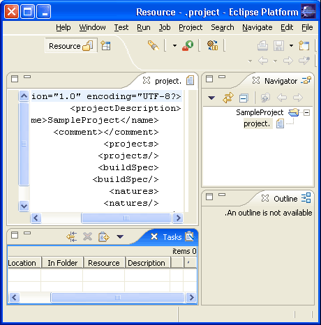

As of Eclipse 3.1 M3 bidirectional languages are supported in JFace and the Workbench. A bidirectional language is one that can write both right to left and left to right based on context. Most directional languages have a right to left orientation by default and will occasionally switch to left to right to write a foreign word.
org.eclipse.jface.Window now has a static default orientation (Window#getDefaultOrientation) that is determined by checking the following in order
Views and editors will by default inherit the window orientation from thier parent. Dialogs should inherit orientation by using the shellStyle of thier parent when setting thier own by calling super#getShellStyle.

Figure 1 - Screenshot of right to left orientation of the resource perspective